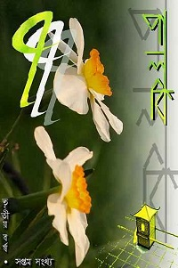

Palki Bengali Magazine
Introduction
Palki Bengali Magazine is an online magazine, first published in 2008 in Bengali language. The publication became widely popular, especially among the Bengali community living abroad. Consequently, the later publication of the magazine was published in bi-lingual fashion, accepting contribution in both Bengali and English.
Brief History
In its early days around 2008, Mr. Ankan Basu was responsible for both editorial duties and web publishing. However, no particular publication schedule was maintained at that time. As more and more people were involved with the Palki magazine, a more standard publication interval was established. Due to community enabled project, Palki used to be published in every 6 months.
Palki published interviews with stars from the movies and singers, and poems and artists who are famous in the city of Kolkata. In addition, it published creative work from numerous authors around the world. As a matter of fact, Pakli even awarded its contributors handsomely.
Current Status
A total of 12 Palki editions were published. The last publication came out in 2013. Since then, the community project is on hold. Mr. Basu is optimistic about resuming the publication of Palki and currently looking for people interested in sharing editorial and publication work. The original website http://calcuttans.com/palki is owned by Mr. Basu and will be made available with a redigned look in middle of 2016.
Read Palki Online 11th Edition (File belongs to Mr. Ankan Basu):
| Palki 11 |
|---|
Join Palki facebook Page
Similar Websites
Contact
Palki Magazine407 Ridgeway Drive
Bluefied, VA, 24605